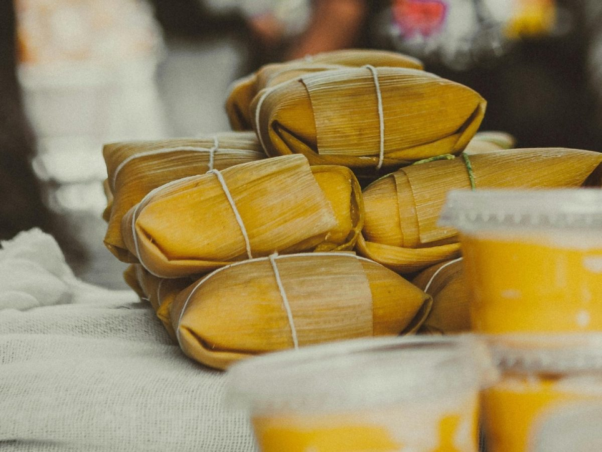
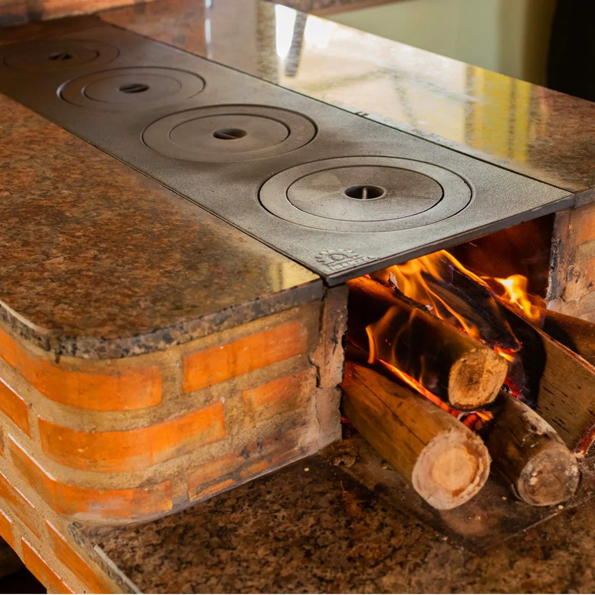
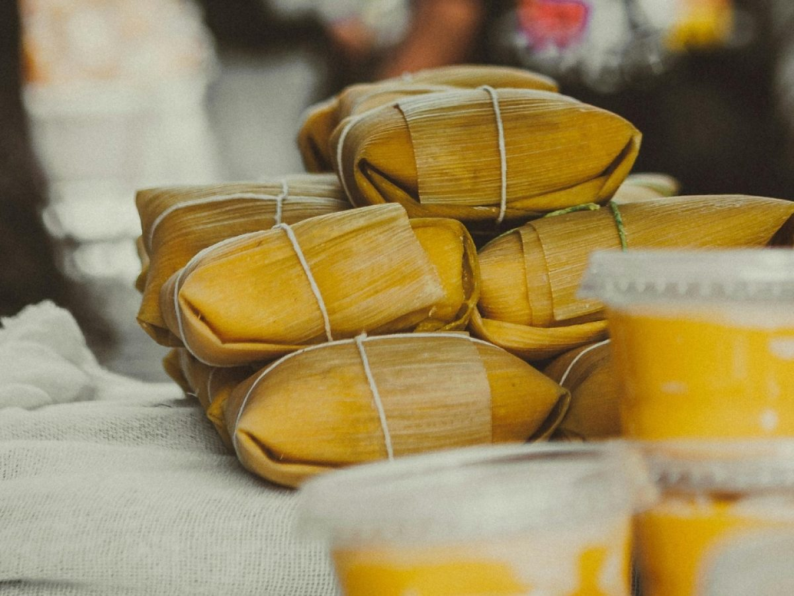
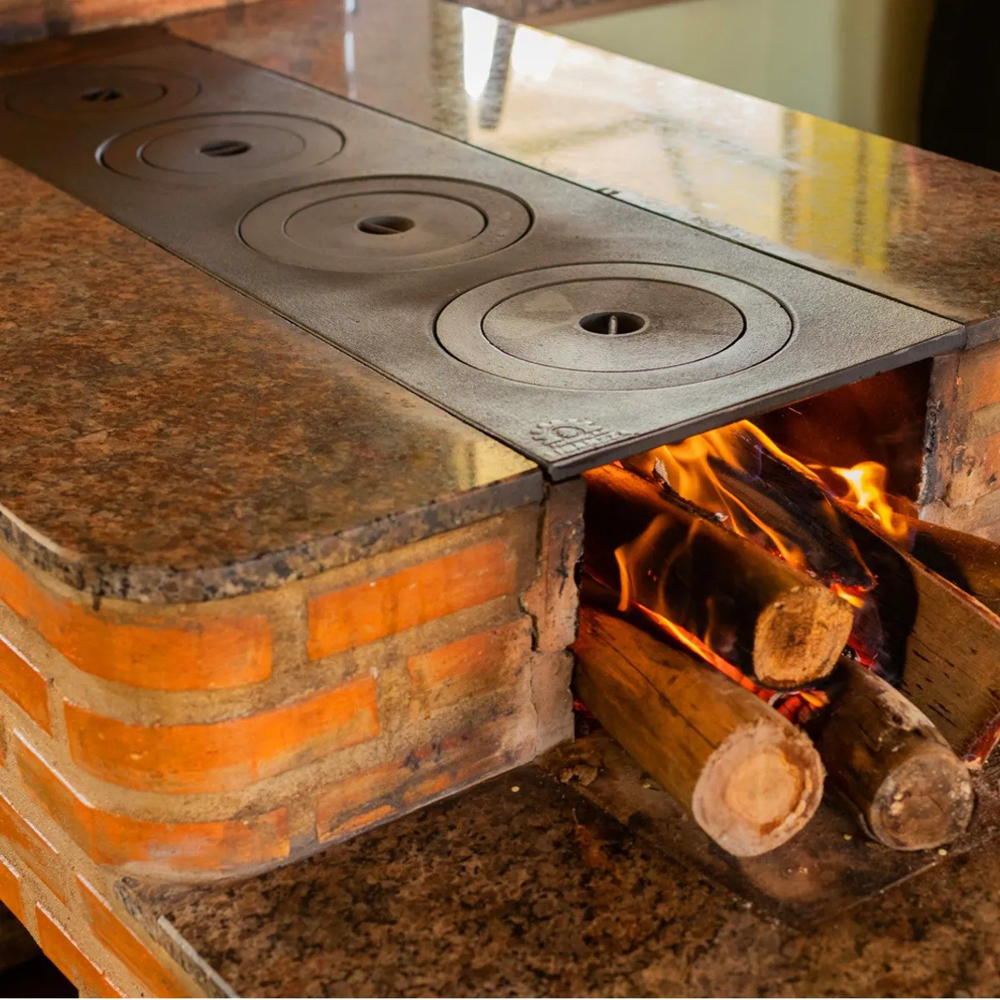

Receita Destaque: Bolo de Milho Cremoso
Direto do fogão à lenha para sua mesa urbana!
- 2 xícaras de milho verde
- 1 xícara de leite
- 1 xícara de açúcar
- 3 ovos
- 1 colher de sopa de manteiga
- 1 xícara de fubá
- 1 colher de sopa de fermento
Modo de preparo: Bata tudo no liquidificador, coloque em forma untada e leve ao forno pré-aquecido por 40 minutos.
Curiosidades do Campo
- Você sabia que o milho é cultivado há mais de 7 mil anos nas Américas?
- O fogão à lenha realça o sabor dos alimentos, segundo estudos científicos.
- Muitas hortas urbanas usam técnicas aprendidas com os agricultores do campo.
Vislumbre dos sabores
NOSSO LAR!
Galeria dos Sabores
Veja como a cidade recria os sabores da roça!
 


